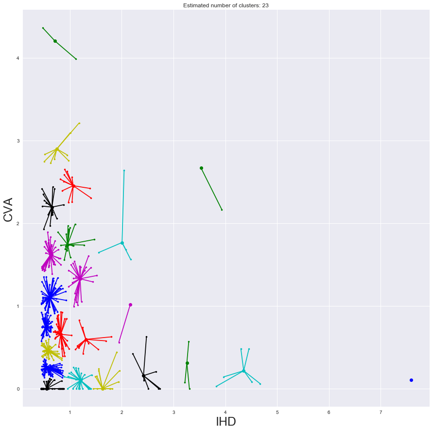

Clustering: Affinity Propagation
from sklearn.cluster import AffinityPropagation
import matplotlib.pyplot as plt
import pandas as pd
import numpy as np
import seaborn as sns
%matplotlib inline
from itertools import cycle
Get Data
data = pd.read_csv('../datareader/score/old-score.csv')
data.index = data['phrase']
ndf = data.drop('phrase',axis =1)
|
Unnamed: 0 |
CVA |
IHD |
CM |
ARR |
VD |
CHD |
| phrase |
|
|
|
|
|
|
|
| 1,25-dihydroxyvitamin_d(3)_24-hydroxylase,_mitochondrial |
0 |
0.000000 |
0.446767 |
0.000000 |
0.000000 |
0.0 |
0.000000 |
| 1,4-alpha-glucan-branching_enzyme |
1 |
0.290414 |
0.000000 |
1.035505 |
0.091431 |
0.0 |
0.372223 |
| 1,5-anhydro-d-fructose_reductase |
2 |
0.000000 |
0.000000 |
0.000000 |
0.000000 |
0.0 |
2.220267 |
| 1-phosphatidylinositol_3-phosphate_5-kinase |
3 |
0.000000 |
0.000000 |
0.000000 |
0.308680 |
0.0 |
0.317226 |
| 1-phosphatidylinositol_4,5-bisphosphate_phosphodiesterase_beta-1 |
4 |
0.000000 |
0.000000 |
0.472116 |
0.000000 |
0.0 |
0.000000 |
Split data
tdata = ndf.copy(deep =True)
cva_ihd = tdata.drop([ 'CM', 'ARR', 'VD', 'CHD'],axis =1)
cva_cm = tdata.drop([ 'IHD', 'ARR', 'VD', 'CHD'],axis =1)
cva_arr = tdata.drop([ 'IHD', 'CM', 'VD', 'CHD'],axis =1)
cva_vd = tdata.drop([ 'IHD', 'CM', 'ARR', 'CHD'],axis =1)
cva_chd = tdata.drop(['IHD', 'CM', 'ARR', 'VD'],axis =1)
ihd_cm = tdata.drop(['CVA', 'ARR', 'VD', 'CHD'],axis =1)
ihd_arr = tdata.drop(['CVA', 'CM', 'VD', 'CHD'],axis =1)
ihd_vd = tdata.drop(['CVA', 'CM', 'ARR', 'CHD'],axis =1)
ihd_chd = tdata.drop(['CVA', 'CM', 'ARR', 'VD'],axis =1)
cm_arr = tdata.drop(['CVA', 'IHD', 'VD', 'CHD'],axis =1)
cm_vd = tdata.drop(['CVA', 'IHD', 'ARR', 'CHD'],axis =1)
cm_chd = tdata.drop(['CVA', 'IHD', 'ARR', 'VD'],axis =1)
arr_vd = tdata.drop(['CVA', 'IHD', 'CM', 'CHD'],axis =1)
arr_chd = tdata.drop(['CVA', 'IHD', 'CM', 'VD'],axis =1)
vd_chd = tdata.drop(['CVA', 'IHD', 'CM', 'ARR'],axis =1)
def remover(df,cvd1,cvd2):
protein = df.index
d1 = df[cvd1]
d2 = df[cvd2]
DT = []
c = 0.5
cutoff = list(df.mean()+(c*df.std()))
for p,a,b in zip(protein,d1,d2):
if a > cutoff[0] or b > cutoff[1] :
DT.append({'protein': p, cvd1: a, cvd2: b},)
dfr = pd.DataFrame(DT)
dfr.index = dfr['protein']
dfr = dfr.drop('protein',axis =1)
return dfr
Select Pair
cvd1 = 'ARR' #
cvd2 = 'CVA'
df = cva_arr
pref=-1.0
cvd1 = 'IHD' #
cvd2 = 'CVA'
df = cva_ihd
pref=-1.0
cvd1 = 'CM' #
cvd2 = 'CVA'
df = cva_cm
pref=-0.1
cvd1 = 'VD' #
cvd2 = 'CVA'
df = cva_vd
pref=-0.1
cvd1 = 'CHD' #
cvd2 = 'CVA'
df = cva_chd
pref=-0.1
cvd1 = 'IHD'#
cvd2 = 'CM'
df = ihd_cm
pref=-0.1
cvd1 = 'IHD'#
cvd2 = 'ARR'
df = ihd_arr
pref=-0.1
cvd1 = 'IHD'#
cvd2 = 'VD'
df = ihd_vd
pref=-0.1
cvd1 = 'IHD' #
cvd2 = 'CHD'
df = ihd_chd
pref=-0.1
cvd1 = 'CM' #
cvd2 = 'ARR'
df = cm_arr
pref=-0.1
cvd1 = 'CM' #
cvd2 = 'VD'
df = cm_vd
pref=-0.1
cvd1 = 'CM'#
cvd2 = 'CHD'
df = cm_chd
pref=-0.1
cvd1 = 'ARR'#
cvd2 = 'VD'
df = arr_vd
pref=-0.1
cvd1 = 'ARR'#
cvd2 = 'CHD'
df = arr_chd
pref=-0.1
cvd1 = 'VD'#
cvd2 = 'CHD'
df = vd_chd
pref=-0.1
rdf = remover(df,cvd1,cvd2)
rdf.head()
|
CVA |
IHD |
| protein |
|
|
| 1-phosphatidylinositol_4,5-bisphosphate_phosphodiesterase_delta-1 |
0.484608 |
0.000000 |
| 2',3'-cyclic-nucleotide_3'-phosphodiesterase |
2.739150 |
0.000000 |
| 3-hydroxy-3-methylglutaryl-coenzyme_a_reductase |
1.006448 |
3.095639 |
| 43_kda_receptor-associated_protein_of_the_synapse |
1.283404 |
0.169499 |
| 5-hydroxytryptamine_receptor_1a |
0.846001 |
0.484862 |
X = rdf.copy(deep =True)
p = np.array(list(X.index))
Affinity Propagation
# Compute Affinity Propagation
af = AffinityPropagation(preference = pref).fit(X)
indices = af.cluster_centers_indices_
labels = af.labels_
n_clusters = len(indices)
n_clusters
Data and Plot
sns.set()
plt.figure(figsize = [15,15])
DTT =[]
X = np.array(X)
colors = cycle('bgrcmykbgrcmykbgrcmykbgrcmyk')
for k, col in zip(range(n_clusters), colors):
class_members = labels == k
cluster_center = X[indices[k]]
ln = len(X[class_members, 0])
if ln >1:
for i in range(ln):
DTT.append({'label': k,\
'protein': p[class_members][i],\
cvd1: X[class_members, 0][i],\
cvd2: X[class_members, 1][i],\
'color':col})
else:
DTT.append({'label': k,\
'protein': p[class_members][0],\
cvd1: X[class_members, 0][0],\
cvd2: X[class_members, 1][0],\
'color':col})
# plot data
plt.plot(X[class_members, 0], X[class_members, 1], col + '.')
# plot center
plt.plot(cluster_center[0], cluster_center[1], '.', markerfacecolor=col,
markeredgecolor='k', markersize=14)
# draw lines
for x in X[class_members]:
plt.plot([cluster_center[0], x[0]], [cluster_center[1], x[1]], col)
plt.title('Estimated number of clusters: %d' % n_clusters)
plt.xlabel(cvd1, fontsize = 25)
plt.ylabel(cvd2, fontsize = 25 )
plt.savefig('plot/'+cvd1+'-'+cvd2+'.pdf')
plt.show()

listdf = pd.DataFrame(DTT)
listdf.index = listdf['protein']
listdf = listdf.drop('protein',axis =1)
listdf.head(5)
|
ARR |
CVA |
color |
label |
| protein |
|
|
|
|
| 1-phosphatidylinositol_4,5-bisphosphate_phosphodiesterase_delta-1 |
0.000000 |
0.484608 |
b |
0 |
| 5-hydroxytryptamine_receptor_2a |
0.174764 |
0.555104 |
b |
0 |
| 78_kda_glucose-regulated_protein |
0.065296 |
0.529532 |
b |
0 |
| achaete-scute_homolog_1 |
0.000000 |
0.449759 |
b |
0 |
| adenylyl_cyclase-associated_protein_2 |
0.000000 |
0.449759 |
b |
0 |
Add Uniprot
data = pd.read_csv('uniprot.csv')
data.index = data['protein']
udf = data.drop('protein',axis =1)
udf.head()
|
uniprot_id |
gene_names |
has_multiple_IDs |
| protein |
|
|
|
| natriuretic_peptides_b |
P16860 |
NPPB |
NaN |
| angiotensin-converting_enzyme |
P12821 |
ACE DCP DCP1 |
NaN |
| potassium_voltage-gated_channel_subfamily_h_member_2 |
Q12809 |
KCNH2 ERG ERG1 HERG |
NaN |
| c-reactive_protein |
P02741 |
CRP PTX1 |
NaN |
| apolipoprotein_e |
P02649 |
APOE |
NaN |
idx_cvd = list(listdf.index)
idx_uprt = list(udf.index)
prot_dict = []
for item in idx_cvd:
data = listdf.loc[item,:]
if item in idx_uprt:
prot_dict.append({'Protein':item,\
cvd1:data[0],\
cvd2:data[1],\
'color':data[2],\
'label': data[3],\
'uprot':udf.loc[item,:][0]})
else:
print(item,'Match not Found')
prot_dict.append({'Protein':item,\
cvd1:data[0],\
cvd2:data[1],\
'color':data[2],\
'label': data[3],\
'uprot':'NAN'})
resultdf = pd.DataFrame(prot_dict)
resultdf.index = resultdf['Protein']
resultdf = resultdf.drop('Protein',axis =1)
resultdf.head(10)
|
CVA |
IHD |
color |
label |
uprot |
| Protein |
|
|
|
|
|
| brain-derived_neurotrophic_factor |
0.492909 |
0.026065 |
b |
0 |
P23560 |
| alpha-galactosidase_a |
0.488128 |
0.003105 |
b |
0 |
P06280 |
| neurotrophin-3 |
0.510094 |
0.025944 |
b |
0 |
P20783 |
| tetraspanin-33 |
0.686945 |
0.003340 |
b |
0 |
Q86UF1 |
| glutamate_receptor_ionotropic,_nmda_2c |
0.479266 |
0.051119 |
b |
0 |
Q14957 |
| nestin |
0.404329 |
0.040345 |
b |
0 |
P48681 |
| glutamate_receptor_ionotropic,_nmda_2b |
0.480174 |
0.050999 |
b |
0 |
Q13224 |
| glutamate_receptor_ionotropic,_nmda_1 |
0.479685 |
0.051063 |
b |
0 |
Q05586 |
| microtubule-associated_protein_2 |
0.520331 |
0.000000 |
b |
0 |
P11137 |
| glial_fibrillary_acidic_protein |
0.568521 |
0.003560 |
b |
0 |
P14136 |
resultdf.to_csv('data/' + cvd1 + '-' + cvd2 + '.csv')